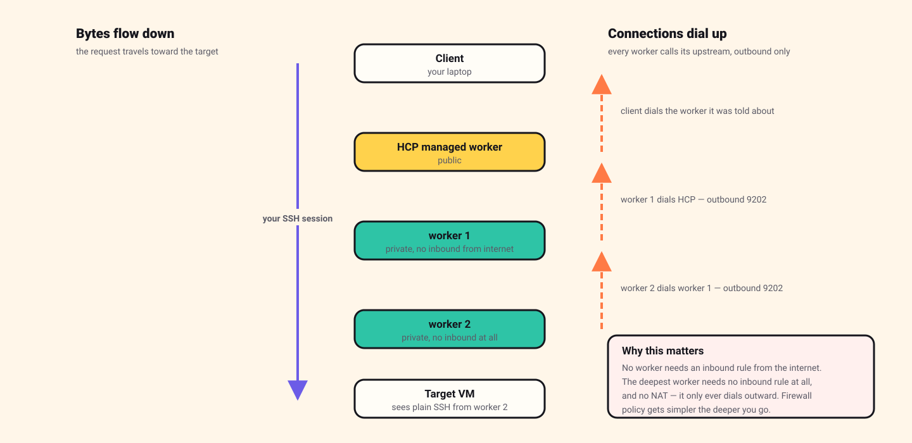
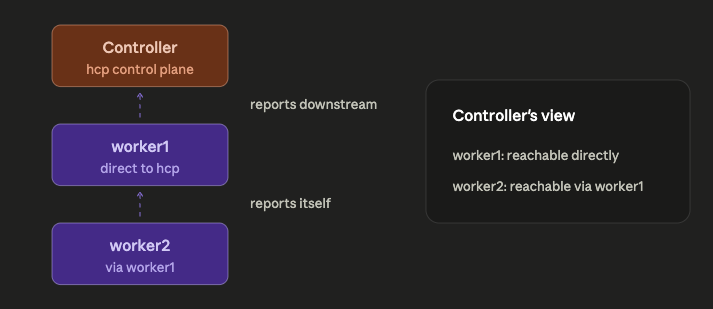
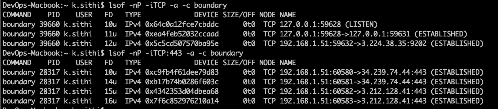
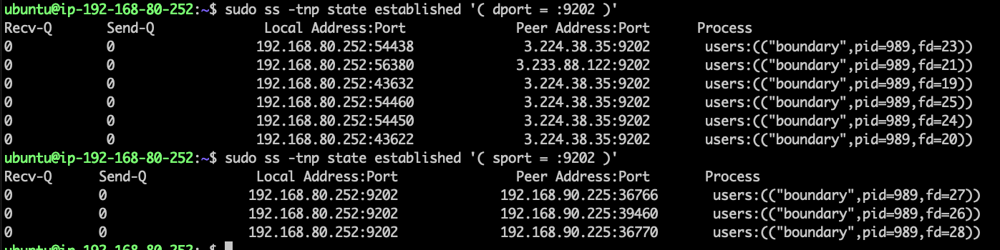
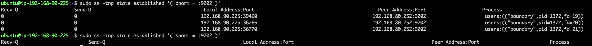
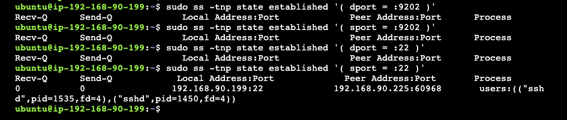

Boundary in AWS: reaching a network with no way out
The hardest of the three, and the most interesting. The target sits in a VPC with no internet access at all — no gateway, no NAT, nothing. One worker cannot reach both HashiCorp and the target, so we chain two together and let them dial each other.
Read it, then build it 🛠️
This page is written to be followed along with, not just read. Open the Excalidraw board beside it and work through the steps yourself — every screen I filled in is captured there, in the order I filled it in.
Reading gives you the shape of the thing. Only doing it gives you the understanding. I did not learn any of this by reading, and I do not think anyone does.
Do the other two first. This build assumes you have already done the Azure walkthrough — worker install, registration, credential stores and targets are covered there in detail and only summarised here. Start with What is HashiCorp Boundary? if the vocabulary is new.
Contents
- Why one worker is not enough
- The idea that makes it work
- Before you start
- Step 1 · Two VPCs and a peering
- Step 2 · Security groups as a chain
- Step 3 · Four machines
- Step 4 · Two workers
- Step 5 · Target and egress filter
- Step 6 · Proving the whole chain
- How the controller works out the route
- AWS gotchas
- Clean up
Why one worker is not enough
In the Azure build, our single worker had two jobs: reach HashiCorp's control plane outbound, and reach the target VM over the peering. It could do both because it had a NAT gateway for the first and a peering for the second.
Now imagine the target's network has no internet access at all.
A worker placed in that network could reach the target, but could never register with HCP — it has no path to the internet. A worker placed in the other network could register fine, but might not be allowed to reach across into a network that is deliberately sealed.
So we use two, and chain them. Worker 1 lives in the boundary VPC and can reach HCP. Worker 2 lives in the profile VPC next to the target. Worker 2 never talks to HashiCorp at all — it talks to worker 1, and worker 1 talks to HashiCorp.
The session path becomes: laptop → HCP managed worker → worker 1 → worker 2 → target.
The idea that makes it work
Before building anything, there is one concept to get straight, and it explains every firewall rule that follows.

Your data flows down the chain toward the target. But every TCP connection in that chain is established in the opposite direction — each worker dials its upstream and holds the connection open.
- Worker 2 dials worker 1.
- Worker 1 dials HashiCorp.
- Your laptop dials whichever worker the controller told it to.
Which means, and this is the payoff:
- No worker needs an inbound rule from the internet.
- Worker 2 needs no inbound rule at all, and no NAT gateway. It only ever dials outward to its neighbour.
- Firewall policy gets simpler the deeper into the network you go — the opposite of how jump-host designs behave.
Before you start
- An AWS account with permission to create VPCs and EC2 instances.
- An HCP account with a Boundary cluster.
- An SSH key pair, and your own public IP address.
- Both walkthroughs above, ideally. This one moves faster.
Money. This is the most expensive of the three — four instances plus a NAT gateway. NAT gateways bill hourly regardless of traffic. Set a budget alert, and do the clean-up step the same day.
Step 1 · Two VPCs and a peering
The boundary VPC
Address range 192.168.80.0/24, with two subnets:
- A public subnet for the temporary bastion. This needs an internet gateway and a route to it.
- A private subnet for worker 1, with a NAT gateway so it can reach HCP outbound.
The profile VPC
Address range 192.168.90.0/24, one private subnet, holding worker 2
and the target. No internet gateway. No NAT gateway. This network
has no path to the internet in either direction, which is the entire point of the
exercise.
Peer them — and write the routes yourself
Create a VPC peering connection from the boundary VPC to the profile VPC, and accept it on the other side.
AWS does not add the routes for you. This is the big difference from Azure and Google Cloud. After the peering is active you must edit the route table in each VPC and add an entry pointing at the other VPC's range via the peering connection. Miss either one and traffic fails in a way that looks like a firewall problem but is not.
Step 2 · Security groups as a chain
Write these in the order traffic dials, and they become obvious. Remember: each worker dials up, so inbound rules appear on the upstream machine.
bastion SG (temporary — delete this machine later)
inbound SSH 22 from your own public IP
outbound SSH 22 to worker 1 and worker 2
worker 1 SG (boundary VPC, private subnet)
inbound SSH 22 from the bastion (setup only)
inbound TCP 9202 from worker 2 (worker 2 dials in)
outbound TCP 9202 to HCP managed workers (worker 1 dials out)
worker 2 SG (profile VPC, private subnet)
inbound SSH 22 from the bastion (setup only — removable)
outbound TCP 9202 to worker 1
outbound SSH 22 to the target
target SG (profile VPC, private subnet)
inbound SSH 22 from worker 2 only
outbound nothingLook at worker 2's rules once the bastion is gone: no inbound rules at all. Nothing connects to it. It reaches worker 1 by dialling out, and it reaches the target by dialling out. That is the deepest machine in the chain, and it is also the one with the least exposure.
Step 3 · Four machines
| Machine | VPC / subnet | Address | Purpose |
|---|---|---|---|
| bastion | boundary / public | public IP | Copy binaries. Delete afterwards. |
| worker 1 | boundary / private | 192.168.80.252 | Talks to HCP. Accepts worker 2. |
| worker 2 | profile / private | 192.168.90.225 | Talks to worker 1. Dials the target. |
| target | profile / private | 192.168.90.199 | The server we want. |
Step 4 · Two workers
Install Boundary on both worker machines exactly as in the Azure walkthrough — same download, same systemd unit. The configuration files differ.
Worker 1 — the one that reaches HCP:
hcp_boundary_cluster_id = "<your-cluster-id>"
listener "tcp" {
address = "0.0.0.0:9202"
purpose = "proxy"
}
worker {
public_addr = "192.168.80.252"
auth_storage_path = "/home/ubuntu/boundary/worker1"
tags {
automated = ["ansible"]
owner = ["kst"]
country = ["india"]
region = ["ap-south-1"]
}
}
events {
audit_enabled = true
observations_enabled = true
sysevents_enabled = true
sink "stderr" {
name = "all-events"
event_types = ["*"]
format = "cloudevents-json"
}
}
Worker 2 uses the same shape, but its upstream is worker 1 rather
than HCP — it is configured to dial 192.168.80.252:9202 instead of the
cluster. Register worker 1 first, then worker 2; the chain has to be built from the
top down, because worker 2 has nothing to dial until worker 1 exists.
Turn the event logs on. The events block above is
worth keeping. When something in a multi-hop chain does not work, the worker's
own log is the fastest way to find out which link is missing — far faster than
guessing at security groups.

Step 5 · Target and egress filter
Create the credential store and SSH target as before, pointing at
192.168.90.199:22. Then set the egress worker filter to select worker
2 — the one sitting next to the target:
"ap-south-1" in "/tags/region"The controller now knows worker 2 makes the final hop, and it already knows worker 2 is reachable via worker 1. It works the rest out itself.
Step 6 · Proving the whole chain
Connect with boundary connect ssh. Then, while the session is open, go
and look at all four machines. This is the most instructive twenty minutes in the
entire series.
Your laptop

lsof -nP -iTCP -a -c boundary. Several connections on
443 to the controller, and one on 9202 to
3.224.38.35 — an HCP managed worker. Your session enters the chain
through HashiCorp's machine, because your own workers have private addresses.
Worker 1

dport = :9202 shows worker 1 dialling out to
HCP. sport = :9202 shows connections arriving in from
192.168.90.225 — worker 2. Worker 1 is both a client and a server,
and it opened the upstream half itself.
Worker 2

192.168.80.252:9202, which is worker 1. The
sport = :9202 query returns nothing. Nobody
connects to worker 2, ever.
The target

192.168.90.225, owned by sshd. Ordinary SSH from a
neighbour.
Read those four in order and the architecture stops being a diagram. Your laptop talks to HashiCorp. Worker 1 talks to HashiCorp and hears from worker 2. Worker 2 talks to worker 1 and hears from nobody. The target hears plain SSH from a machine on its own subnet. At no point does anything require an inbound path from the internet.
How the controller works out the route
A fair question at this point: worker 2 has no configuration mentioning the target. It does not know the address. So how does it know where to connect?
It is told, in this order:
-
You ask. You say "connect me to
tssh_TnK5FbClBJ". The controller opens that target's record and reads the address off it —192.168.90.199, port 22. - The controller picks the worker. Your egress filter says worker 2, so worker 2 will do the dialling.
- The instruction goes down the chain. When worker 2 asks "is this session real?", the answer is not just yes. It is: yes — and when the bytes arrive, open a TCP connection to 192.168.90.199:22.
-
Worker 2 dials the target. A plain, ordinary TCP connect — the
same thing
sshwould do from that machine. - It becomes a pipe. Worker 2 holds two connections, one facing up the chain and one facing the target, and copies bytes between them.
Worker 2 never reads a config file about your target and never looks anything up. It is a courier that gets told the address at the moment of delivery.
AWS gotchas
Peering routes are manual
The one that will get you. Azure and Google Cloud add peering routes automatically; AWS does not. Two route tables, one entry each, and the symptom of forgetting is silence rather than an error.
Build the chain from the top down
Register worker 1 before worker 2. Worker 2's whole existence depends on having an upstream to dial, and registering it first produces a confusing failure.
The bastion is scaffolding
It exists to copy a binary onto two machines. Delete it the moment both workers are running. A public SSH host with no remaining purpose is exactly the kind of thing that quietly becomes permanent — mine outlived its usefulness by several days because nothing forced the issue.
Do not add hops for their own sake
Multi-hop is not a more secure version of the single-worker design; it answers a different question. Reach for it when the network genuinely has no way out. The security benefit of a third hop over a second is close to zero if the second was already private, and every hop is another machine to patch.
Clean up
Terminate all four instances, delete the NAT gateway — it is the expensive part — then the peering, then both VPCs. Remove both workers, the target and the credential store from the Boundary admin console.
Where to go next. You have now built all three designs. The comparison — why they differ, how to choose, and the one config line that decides which you get — is in Who actually carries the packets? To replace the password login with a real company account, see Boundary and Entra ID.